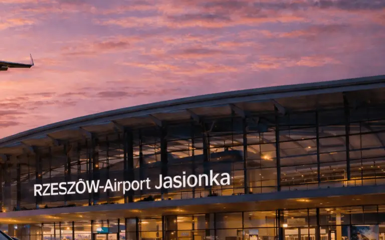
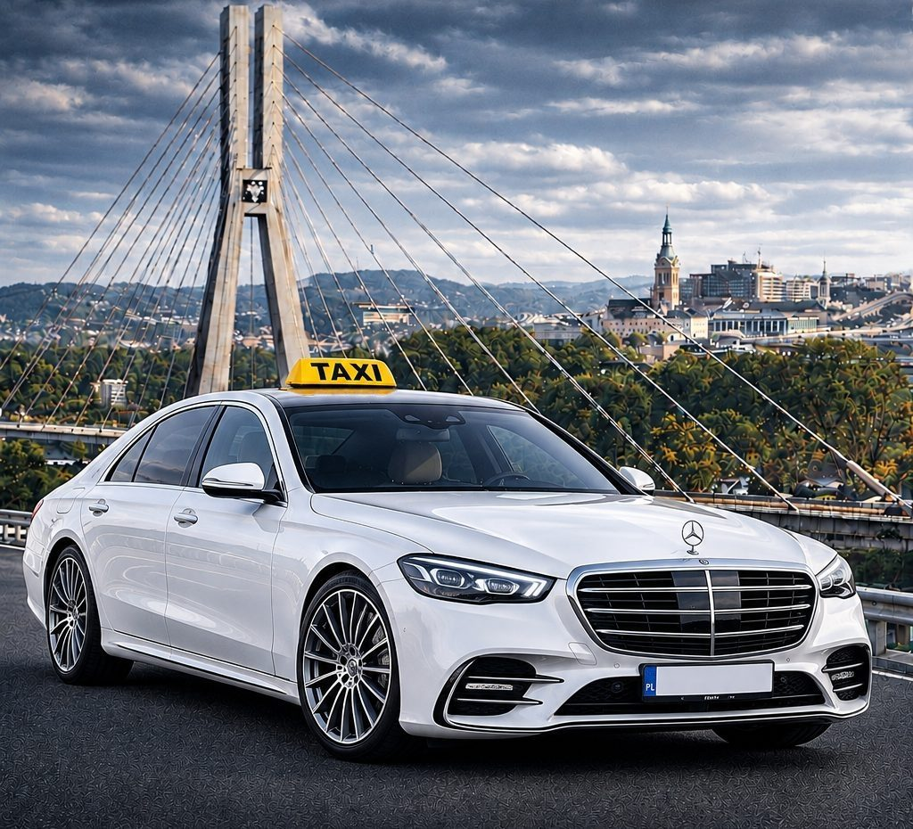
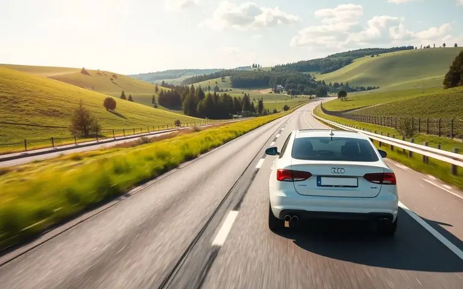
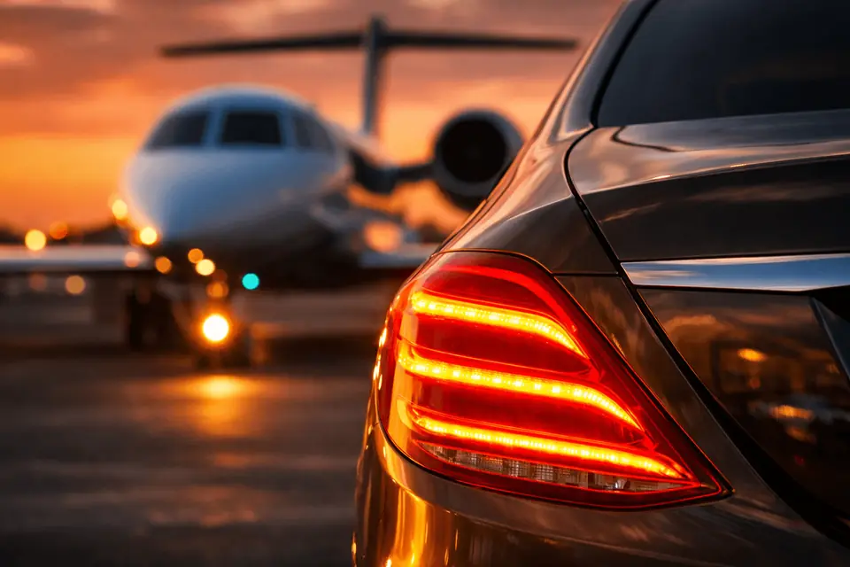
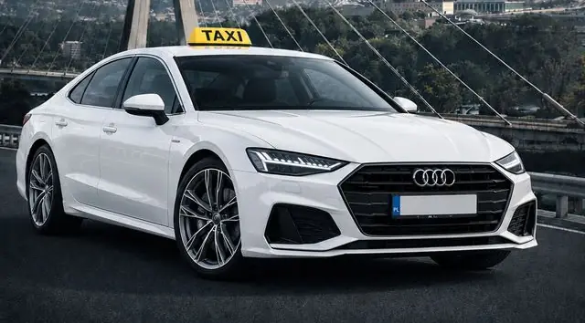
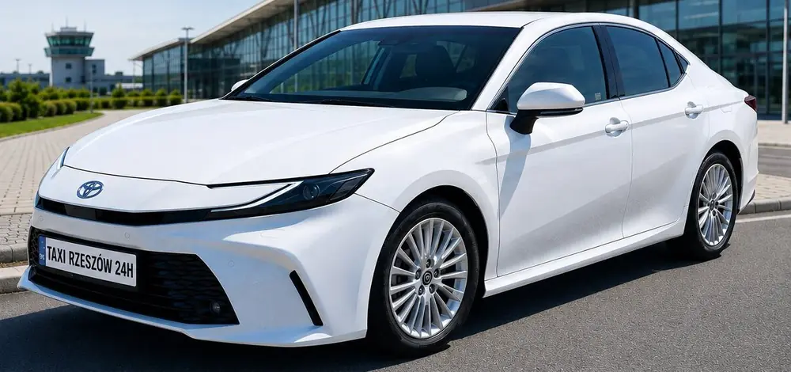
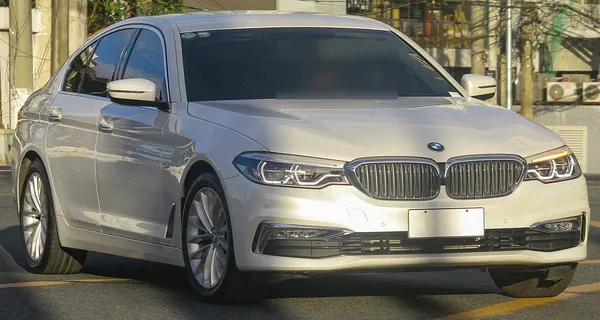
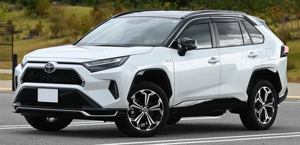
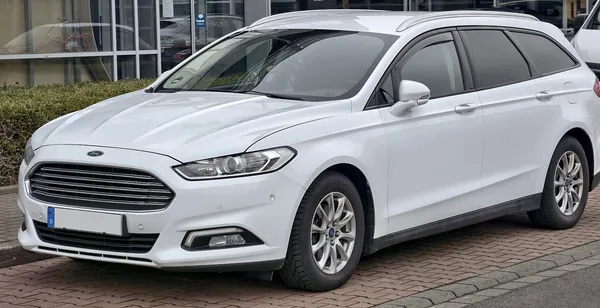

Трансфери в аеропорт
Ясьонка, Краків, Катовіце, Люблін і Варшава. Зустрінемо з літака, навіть якщо рейс затримується.

Поїздки містом, зустріч з літака і далекі маршрути. Замовлення за хвилину, а ми підтвердимо SMS або телефоном.
Цілодобово, також у свята. Картка, готівка або BLIK.
Окрім поїздок містом, возимо до аеропортів, до Перемишля і на кордон у Медиці, їздимо на далекі відстані та виконуємо доручення: покупки, посилки, допомога з авто.

Ясьонка, Краків, Катовіце, Люблін і Варшава. Зустрінемо з літака, навіть якщо рейс затримується.
Поїздки містом і околицями цілодобово: на вокзал, до лікаря, нічне повернення додому.

Перемишль, Медика (кордон з Україною), Краків, Катовіце, Люблін, Варшава та інші міста. Без пересадок, від дверей до дверей.
Ви телефонуєте зі списком, ми робимо покупки й доставляємо їх за вказаною адресою. Зручно для літніх людей і тих, хто не може вийти з дому.
Не лише аеропорти: возимо з Жешува до Перемишля і на пункт пропуску на кордоні з Україною в Медиці. На замовлення, у будь-який час, також уночі, в обидва боки. Ціну повідомимо під час підтвердження замовлення.

Возимо до аеропорту Жешув-Ясьонка з будь-якої частини Жешува та околиць: з центру, Nowe Miasto, Baranówka, Drabinianka, Pobitno, Zalesie чи Budziwój. Водій стежить за прильотами, тож зустріне вас вчасно, навіть якщо літак запізнюється.
Ми місцева фірма і знаємо Жешув напам’ять. Короткі поїздки містом, нічні повернення, поїздки до лікаря чи на вокзал, також у вихідні та свята.
Початкова плата і ціна за кілометр залежать від часу доби і того, чи ви їдете містом, чи за місто.
Трансфери до аеропорту і далекі маршрути розраховуємо індивідуально; ціну повідомляємо під час підтвердження замовлення.
| Початкова плата | 10 зл |
|---|---|
| Тариф 1будні, 6:00-22:00 | 4 зл/км |
| Тариф 2ніч 22:00-6:00, неділі та свята | 6 зл/км |
| Тариф 3поїздки за місто без повернення | 8 зл/км |
| Тариф 4нічні поїздки за місто без повернення | 11 зл/км |
| Очікуванняна прохання клієнта | 55 зл/год |
Ціни і вартість поїздок можна обговорити індивідуально.
Вкажіть адресу, час і телефон, і замовлення надійде прямо до нас. Ми підтвердимо його SMS або телефоном.
Їздимо доглянутими авто: Audi A7, Toyota Camry, BMW 5 серії, Toyota RAV4 і Ford Mondeo універсал. Зручно навіть із великим багажем.



ілюстративне фото
ілюстративне фото
ілюстративне фотоФото BMW, RAV4 і Mondeo ілюстративні, з Wikimedia Commons: Ethan Llamas (CC BY-SA 4.0), TTTNIS (CC0), M 93 (CC BY-SA 3.0 DE); обрізані, обличчя водія в BMW розмите. Змінені фото поширюємо на тих самих ліцензіях.
Я замовив таксі заздалегідь, у домовлений час воно чекало біля мого дому. Приємно і безпечно.
Я не маю власного авто, тому регулярно користуюся Taxi Rzeszów. Чудовий зв’язок.
Обираю таксі як безпечну альтернативу водіям, які возять людей без ліцензії.
Так, ми їздимо Жешувом і околицями 24 години на добу, також у вихідні та свята.
Так. Возимо до аеропорту Жешув-Ясьонка і забираємо звідти, а також їздимо до аеропортів у Кракові, Катовіце, Любліні та Варшаві. Поїздку можна забронювати заздалегідь.
Так. Поїздки з Жешува до Перемишля і на пункт пропуску на кордоні з Україною в Медиці виконуємо на замовлення, у будь-який час, також уночі. Ціну повідомляємо під час підтвердження замовлення.
Ми завжди відстежуємо рейс щодо затримок, тож водій приїде вчасно. Час очікування безкоштовний. Достатньо вказати номер рейсу в замовленні.
Авто завжди стоїть навпроти виходу з терміналу. На прохання водій чекає в терміналі з табличкою з вашим іменем - допишіть це в примітках до замовлення.
Трансфери до аеропорту розраховуємо індивідуально: ціну повідомляємо під час підтвердження замовлення, SMS або телефоном. Ціни за кілометр у чотирьох тарифах - у прайсі.
Телефоном +48 536 805 851, через WhatsApp або формою замовлення на цій сторінці. Кожне замовлення підтверджуємо SMS або телефоном.
Так, ми виконуємо ділові перевезення і виставляємо рахунки-фактури корпоративним клієнтам.
Замовлення приймаємо польською, англійською, німецькою та українською. Найпростіше написати у WhatsApp.